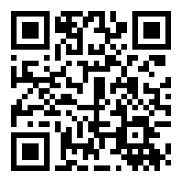
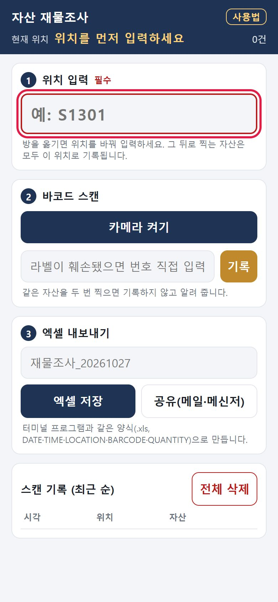
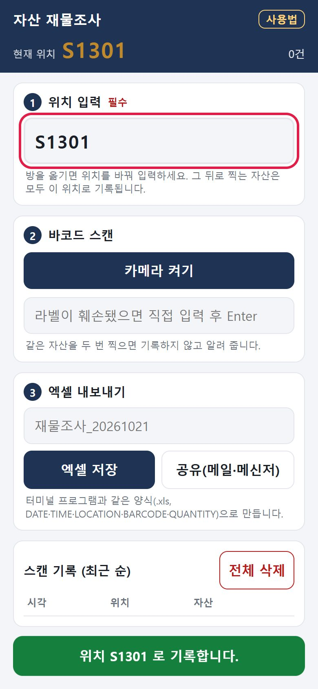
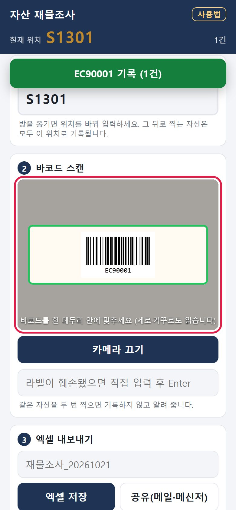
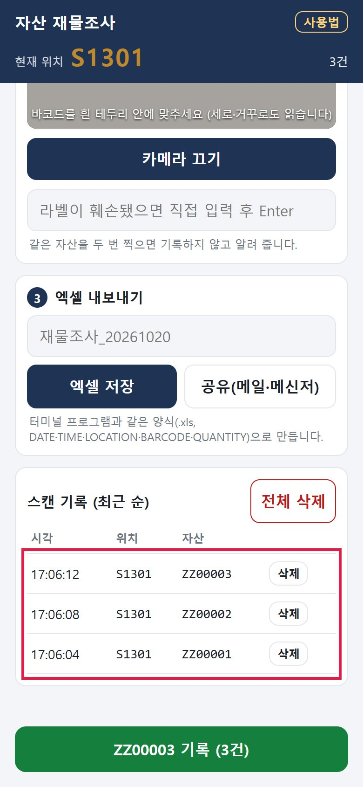
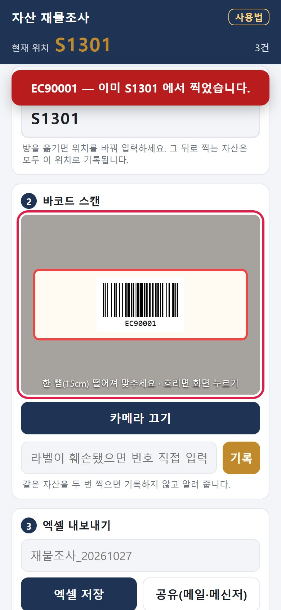
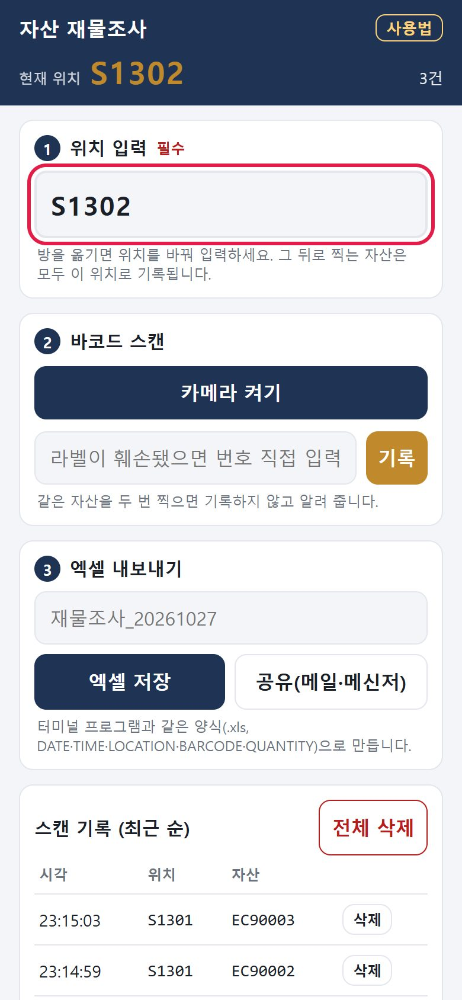
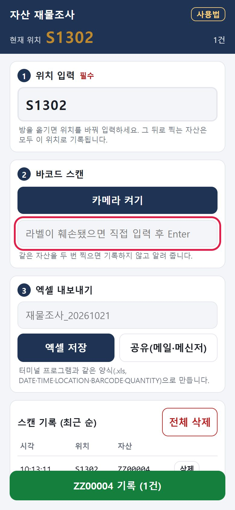
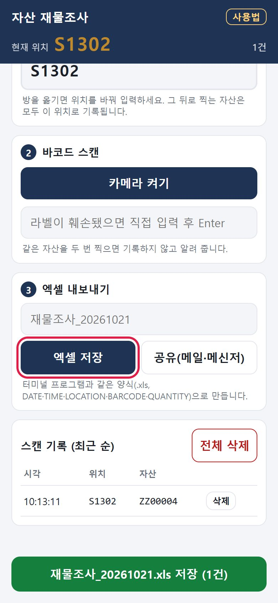

앱 주소
https://cw8948.github.io/asset-scan/
핸드폰 카메라로 QR 코드를 비추거나 주소를 직접 입력해 엽니다. 설치 파일은 없습니다.
처음 한 번만
① 안드로이드는 크롬, 아이폰은 사파리로 엽니다. 카메라 권한을 물으면 허용을 누릅니다.
② 카카오톡에서 링크를 누르면 자동으로 크롬(아이폰은 사파리)으로 넘어갑니다. 넘어가지 않으면 안드로이드는 오른쪽 위 ⋮ → 다른 브라우저로 열기, 아이폰은 오른쪽 아래 ⋯ → Safari로 열기를 누릅니다.
③ 홈 화면에 아이콘을 만들어 두면 다음부터 앱처럼 열 수 있습니다. 안드로이드: 오른쪽 위 ⋮ → 홈 화면에 추가 / 아이폰: 아래쪽 공유(□↑) → 홈 화면에 추가
① 안드로이드는 크롬, 아이폰은 사파리로 엽니다. 카메라 권한을 물으면 허용을 누릅니다.
② 카카오톡에서 링크를 누르면 자동으로 크롬(아이폰은 사파리)으로 넘어갑니다. 넘어가지 않으면 안드로이드는 오른쪽 위 ⋮ → 다른 브라우저로 열기, 아이폰은 오른쪽 아래 ⋯ → Safari로 열기를 누릅니다.
③ 홈 화면에 아이콘을 만들어 두면 다음부터 앱처럼 열 수 있습니다. 안드로이드: 오른쪽 위 ⋮ → 홈 화면에 추가 / 아이폰: 아래쪽 공유(□↑) → 홈 화면에 추가
화면 속 빨간 테두리가 그 단계에서 볼 곳입니다. 화면의 바코드와 기록 값은 예시입니다.

1위치부터 입력합니다
- 앱을 열면 ① 위치 입력 칸이 빨간 테두리로 비어 있습니다. 위치가 비어 있으면 카메라가 켜지지 않습니다.
- 조사할 방(실)의 위치 코드를 입력합니다. 예: S1301

2위치가 위쪽에 표시되는지 확인합니다
- 입력한 위치가 화면 맨 위 현재 위치에 크게 표시됩니다.
- 소문자로 입력해도 대문자로 바뀌어 기록됩니다.

3카메라를 켜고 바코드를 비춥니다
- 카메라 켜기를 누르고, 바코드를 흰 테두리 안에 맞춥니다. 세로로 돌아가 있거나 거꾸로 붙은 바코드도 읽습니다.
- 읽히면 테두리가 초록색으로 바뀌고, 「삑」 소리와 진동이 나며 아래에 「기록」 알림이 뜹니다.
- 버튼을 누를 필요가 없습니다. 비추기만 하면 기록됩니다.
잘 안 읽힐 때: 15~20cm 떨어져서 잠깐 멈추세요. 너무 가까우면 초점이 맞지 않습니다. 어두우면 플래시, 라벨이 작으면 확대 버튼을 씁니다(지원하는 핸드폰에만 보입니다).

4다음 자산으로 옮겨 계속 찍습니다
- 라벨에서 핸드폰을 떼고 다음 자산 라벨을 비추면 됩니다. 같은 라벨을 계속 비추고 있어도 한 번만 기록됩니다.
- 찍은 자산은 아래 스캔 기록에 최근 순으로 쌓이고, 위쪽에 건수가 표시됩니다.
- 잘못 찍은 줄은 오른쪽 삭제로 지웁니다.

5이미 찍은 자산은 기록되지 않습니다
- 같은 자산을 다시 찍으면 테두리가 빨간색으로 바뀌고 「이미 ○○ 에서 찍었습니다」 알림과 낮은 경고음이 납니다.
- 기록은 늘어나지 않으니 그대로 다음 자산으로 넘어가면 됩니다.

6방을 옮기면 위치를 바꿉니다
- ① 위치 입력 칸의 값을 새 위치로 고칩니다. 예: S1301 → S1302
- 그 뒤로 찍는 자산은 새 위치로 기록됩니다. 이미 찍은 기록의 위치는 바뀌지 않습니다.
⚠ 방을 옮기고 위치를 안 바꾸면 앞 방의 위치로 기록됩니다. 위쪽 현재 위치를 자주 확인하세요.

7라벨이 훼손됐으면 직접 입력합니다
- 바코드가 긁히거나 젖어 읽히지 않으면, 라벨에 적힌 자산 번호를 직접 입력 칸에 쓰고 Enter(이동·완료)를 누릅니다.
- 카메라로 찍은 것과 똑같이 기록되고, 중복 확인도 똑같이 합니다.

8끝나면 엑셀로 내보냅니다
- ③ 엑셀 내보내기에서 엑셀 저장(핸드폰에 저장) 또는 공유(메일·메신저로 보내기)를 누릅니다. 파일 이름은 바꿔도 됩니다.
- 안드로이드는 크롬이 엑셀 파일 공유를 막아서, 공유를 누르면 핸드폰에 저장됩니다. 파일(내 파일) 앱 → 다운로드에서 그 파일을 길게 눌러 공유하세요. 아이폰은 공유 창이 바로 뜹니다.
- 파일은 바코드 터미널 프로그램과 같은 양식(.xls)입니다. PC로 옮겨 ZEUS 자산 → 재물조사자료업로드에 올립니다.
- 업로드까지 확인한 뒤에 전체 삭제로 기록을 비우고 다음 조사를 시작합니다.
꼭 알아 둘 점
| 기록은 어디에 저장되나요? | 그 핸드폰 안에만 저장됩니다. 서버나 인터넷으로 보내지 않습니다. |
|---|---|
| 기록이 사라지는 경우 | 브라우저의 방문 기록·사이트 데이터를 지우거나, 홈 화면 앱을 삭제하면 사라집니다. 조사를 마치면 바로 엑셀로 내보내세요. |
| 인터넷이 없어도 되나요? | 한 번 열어 둔 뒤에는 비행기 모드에서도 찍기와 엑셀 저장이 됩니다. |
| 카메라가 안 켜져요 | ① 위치가 비어 있지 않은지 확인합니다. ② 브라우저 설정에서 이 사이트의 카메라 권한이 「허용」인지 확인합니다. |
| 「자산코드 형식이 아닙니다」가 떠요 | 카메라가 바코드를 잘못 읽은 경우입니다(예: 거꾸로 뒤집힌 값, 일부만 읽힌 값). 자산코드는 7자리(분류 영문 1자 + 취득연도 2자 + 일련번호 4자리)입니다. 기록되지 않으니, 바코드를 테두리 안에 바로 맞춰 다시 찍거나 라벨의 번호를 직접 입력하세요. 같은 라벨에서 계속 뜨면 알림 화면을 캡처해 재무팀에 알려 주세요. |
| 카카오톡 안에서 써도 되나요? | 권하지 않습니다. 카카오톡 안의 화면에서는 카메라·엑셀 저장이 제대로 되지 않고, 기록도 크롬과 따로 쌓여 나중에 크롬에서 열면 보이지 않습니다. 앱이 카카오톡 안에서 열리면 크롬(사파리)으로 넘기고 안내를 띄웁니다. |
| 안드로이드에서 공유 창이 안 떠요 | 안드로이드 크롬은 웹에서 엑셀 파일을 공유하지 못하게 막습니다. 앱이 대신 파일을 다운로드 폴더에 저장하니, 파일(내 파일) 앱에서 공유하세요. |
| 같은 바코드가 여러 번 찍혀요 | 같은 라벨은 한 번만 기록되도록 되어 있습니다. 그래도 반복되면 화면을 캡처해 재무팀에 알려 주세요. |